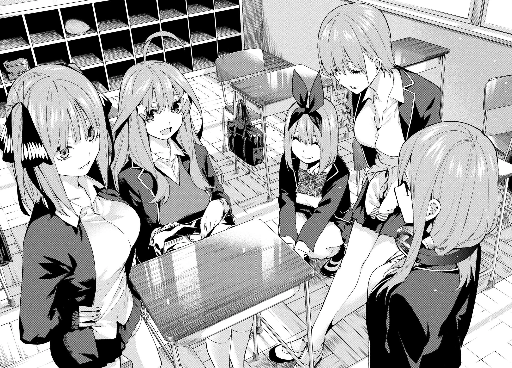

Stile Shojo
Descrizione: Lo stile Shojo è un genere distintivo della manga e dell'anime che si rivolge principalmente a un pubblico femminile adolescente, anche se è amato da persone di tutte le età e generi. Questo stile è caratterizzato da tratti distintivi sia nel disegno che nei temi trattati.
Caratteristiche principali:
- Estetica dei personaggi con lineamenti delicati, occhi grandi e espressivi, lunghi capelli fluenti e una gamma di espressioni emotive molto ricca.
- Emotività e romanticismo con storie che si concentrano sulle relazioni interpersonali e le emozioni dei personaggi.
- Trame complesse che affrontano temi come l'amicizia, il sacrificio, l'accettazione di sé e la lotta contro l'ingiustizia.
- Estetica visiva con sfondi dettagliati e atmosferici e l'uso di tonalità pastello, linee morbide e dettagli delicati.
- Variazioni di genere che possono includere anche fantasy, dramma, paranormale e azione.
